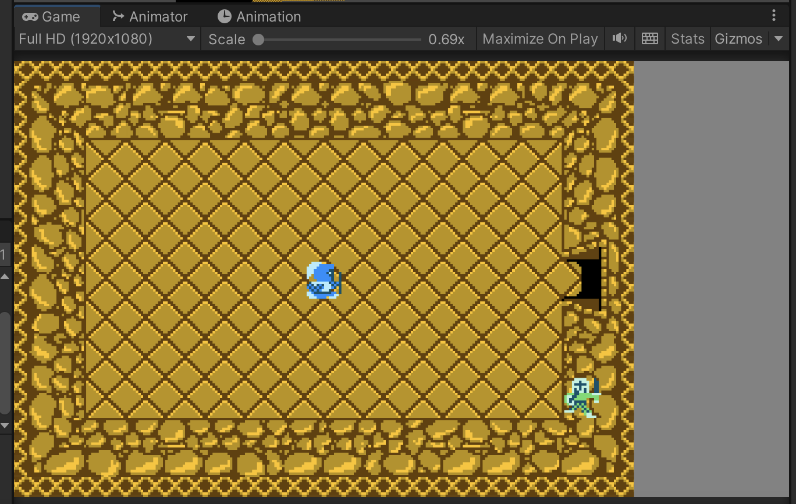
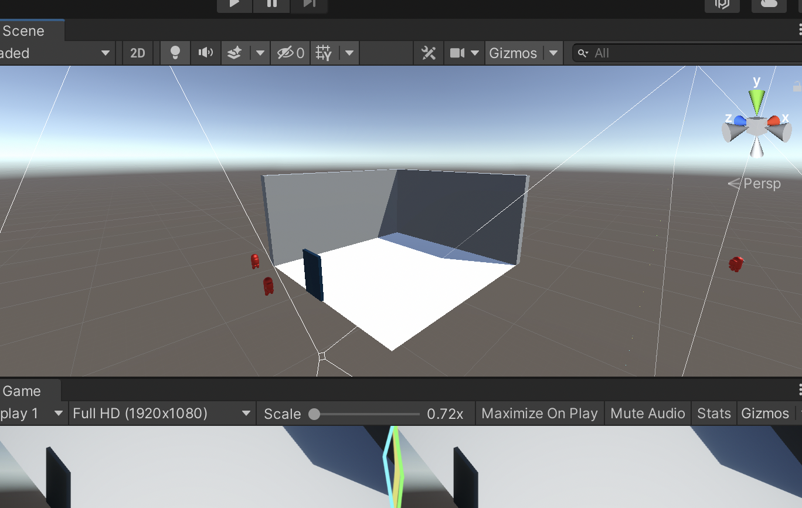

Sunday October 16 2022, By: Nickolas Fraus
Today I was working on a game for my class called Dungeon Delver.
Its a cool project. Ive learned a few new coding techniques such as processing data from text documents, generating tile maps, and interpolating cameras.
I’ve run into a big issue however- my game is broken

Yes, really broken. Because of a problem in my code, the player dashes around the room randomly, and enemies stuck in the walls. Hopefully I can fix it by tonight.
This has taught me something however- to tackle one problem at a time. I decided to continue on writing the code for this project even though one section’s code is broken, and now I can’t remember the part where it broke. I also can’t test if the code I wrote after is working either.
Oh well. I hope to learn from my mistakes.
I also met with two programmers from Spartasoft to work on some Room code. We came up with a great way to handle map generation and door linking, but it strays far from my original idea.
I think I get too attached to my code. I saw the code I wrote as the best way to make our stuff work, but the idea we talked about now sounds like it’ll work a little better. Even then I don’t want to see my work go away, and I was mentally blocking the ideas we came up with.
It sucks, but at least I recognize and can act on this.
Friday October 14 2022, By: Nickolas Fraus
This is my first blog post! I will pat myself on the back.
Today I worked on the dungeon game for Spartasoft Studios. I am assigned three tasks this week, two of which involving Room handling.
We need the rooms in our game to spawn enemies when the player joins the room. If all enemies are in the room then the room is completed and the next rooms are unlocked. If the player leavers the room and comes back, the room is reset.
This was a lot of fun to tackle the problem, even when I’m only halfway done! I have three scripts in use, one for spawners, one for rooms, and one for doors.
The room script contains information for each room in the game, like the type of room, and the completion status. This was simple enough. Each room type will generate differently by using an enum and a switch statement. If the room is complete, nothing will generate at all.

The tricky part is handling the player, especially because there is two of them in the game. My idea for this is to have the doors tell the room when the player enters and leaves. The most challenging part is linking doors together to make this happen, because the current system teleports the player to a set position in a different room, not to a door.
I also met with the Combat Design team today, and boy do they have some cool ideas for the enemies. I am very excited to work on that next week, but I have to finish up my current task first.